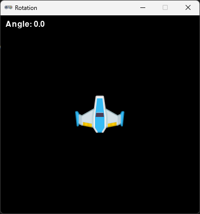
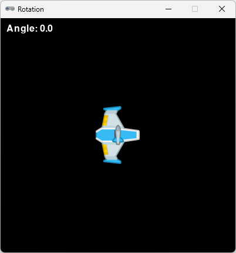

Actor sprites
90 grader roteret rumskib

0 grader roteret rumskib

90 grader roteret missil

0 grader roteret missil
Vi vil i det følgende lave forskellige ting med Pygame Zeros Actor objektet.
Gennem kode eksempler får vi en bedre forståelse af mulighederne med en Actor.
90 grader roteret rumskib
0 grader roteret rumskib
90 grader roteret missil
0 grader roteret missil
Vi bruger dette lille program som en start
WIDTH = 400
HEIGHT = 400
TITLE = 'Rotation'
ship = Actor('spaceship',center=(200, 200))
def update():
if keyboard.right:
ship.angle -= 1
if keyboard.left:
ship.angle += 1
def draw():
screen.clear()
ship.draw()
screen.draw.text('Angle: ' + str(ship.angle), pos=(10,10), color = 'white')
Vores program skal gerne se sådan her ud
ved at trykke piltast venstre og højer kan man roter skibet
I pygame zero er et actor object en indbygget angle egenskab.
vi kan se den i koden ovenfor hvor vi ændre ship.angle i vores update() og vi udlæserne den som tekst
draw()
Så det vil være mest korrekt/hensigtsmæssigt at vores actor spite har samme rotation.
udskift derfor spriten til spaceship0.png
ship = Actor('spaceship0',center=(200, 200))Prøv i programmet at roter mere end en omgang til højre eller venstre
Du vil se at angle værdien fortsætter med at stige udover 360 grader.
Det er ikke altid det man ønsker. I sådan tilfælde kan man lave en normalisering.
I dette tilpasset eksempel er der lavet en normalize funktion og funktionen er benyttet i visning af "Angle
normal"
I normalize funktionen tages modus 360 af den aktuelle vinkel.
Modulo % sikre at den værdi som kommer ud er
indenfor 0 - 360 grader.
Prøv at roter til 45 grader og -45 grader så skal du gerne få henholdsvis 45 og 315 grader.
WIDTH = 400
HEIGHT = 400
TITLE = 'Rotation'
ship = Actor('spaceship0',center=(200, 200))
def update():
if keyboard.right:
ship.angle -= 1
if keyboard.left:
ship.angle += 1
def draw():
screen.clear()
ship.draw()
screen.draw.text('Angle: ' + str(ship.angle), pos=(10,10), color = 'white')
screen.draw.text('Angle normal: ' + str(normalize(ship.angle)), pos=(10,40), color = 'white')
def normalize(angle):
return angle % 360Lad os se på et eksempel hvor vi vil have vores spaceship til at skyde missiler når man trykker på space
tasten.
Tag denne kode og overskrive hele dit tidligere program.
WIDTH = 400
HEIGHT = 400
TITLE = 'Rotation'
ship = Actor('spaceship0',center=(200, 200))
bullets = []
def update():
if keyboard.right:
ship.angle -= 1
if keyboard.left:
ship.angle += 1
def on_key_down():
if keyboard.space:
bullet = Actor('bullet')
bullet.pos = ship.pos
bullet.angle = ship.angle
bullets.append(bullet)
def draw():
screen.clear()
ship.draw()
for b in bullets:
b.draw()
Når der trykkes space kommer bullet actor frem men vi kan se at dens grafik ikke passer
Det ændres ved at bruge en sprite med roteret grafik.
bullet = Actor('bullet0')Nu hvor vi har et missil på skærmen skal vi havde det til at bevæge sig.
Tilføj disse linjer til update()
for b in bullets:
b.x += 1
b.y += 1
Prøv det af. Virker det efter hensigten? Nej ikke rigtigt vel!
Når vores rumskib kan have en vilkårlig retning bliver vi nødtil at sætte denne retning i det øjeblik vi opretter
vores missil actor.
Ændre on_key_down event så den ser sådan her ud.
def on_key_down():
if keyboard.space:
bullet = Actor('bullet0')
bullet.angle = ship.angle
angle_rad = math.radians(bullet.angle)
bullet.vx = math.cos(angle_rad) * 8
bullet.vy = -math.sin(angle_rad) * 8
bullet.pos = ship.pos
bullets.append(bullet)
for at beregne vx og vy bruger vi noget trigonometri.
Det behøver vi ikke bekymre os om lige nu. Men husk at importer math biblioteket
import math
Og nu skal vi tilpasse update() så vi flytter missilet med .vx og .vy
b.x += b.vx
b.y += b.vy
Prøv nu den nye kode og se om det virker
Selvom vi ikke kan se missiler som er udenfor skærmbilledet. Så er de der stadig!
tilføj denne kode linje og se hvordan længden af vores bullets[] bliver større og større jo flere gange vi trykker
space
screen.draw.text('Bullets: ' + str(len(bullets)), pos=(10,10), color = 'white')
Det er ikke godt. Så lad os få fjernet dem som er udenfor skærmen.
for b in bullets:
if not (0 <= b.x <= WIDTH and 0 <= b.y <=HEIGHT):
bullets.remove(b)
Ligesom missilet skal flytte sig i retningen som rumskibet har,
så skal rumskibet selvfølgelig også flytte sig i rigtig retning når vi trykker piltast op.
Det heldigvis rigtig nemt, da vi stort set kan kopier alt koden fra det vi har lavet tidliger.
if keyboard.up:
angle_rad = math.radians(ship.angle)
ship.vx = math.cos(angle_rad) * 4
ship.vy = -math.sin(angle_rad) * 4
ship.x += vx
ship.y += vy
Vi ser dog at vi meget nemt flyver ud uden for vinduet.
Det er ikke så heldigt.
Kan du lave en kode som flytter skibet ind fra modsatte side af vinduet når det flyver ud over kanten
Vi kan holde rumskibet på skærmen ved at tjekke om det er kommet over skærmkanterne.
hvis det er, så flytter vi dets koordinat til modsatte skærmkant
if ship.x < 0:
ship.x = WIDTH
if ship.x > WIDTH:
ship.x = 0
if ship.y < 0:
ship.y = HEIGHT
if ship.y > HEIGHT:
ship.y = 0
Da det nu er et rumskib, så stopper det nok ikke lige når vi slipper piletasten
Lad os ændre koden en smule så farten aftager stille og roligt
ship.vx = 0
ship.vy = 0
if keyboard.up:
angle_rad = math.radians(ship.angle)
ship.vx = math.cos(angle_rad) * 4
ship.vy = -math.sin(angle_rad) * 4
ship.x += ship.vx
ship.y += ship.vy
ship.vx *= 0.98
ship.vy *= 0.98
Prøv det nu og prøv derefter at se om du kan ændre rumskibets fart og nedbremsnings hastighed
Hvis vi nu ikke ændrede vores actor sprites til spaceship0.png og bullet0.png
Men blev ved med at bruge
spaceship.png og bullet.png
så skal vi ændre lidt på beregningen af .vx og vy
ship = Actor('spaceship',center=(200, 200)) bullet = Actor('bullet') ship.vx = -math.sin(angle_rad) * 4
ship.vy = -math.cos(angle_rad) * 4 bullet.vx = -math.sin(angle_rad) * 8
bullet.vy = -math.cos(angle_rad) * 8Du har måske lagt mærke til missilet kommer frem oven på rumskibet.
Det er nok ikke det vi vil. Hvordan får vi missilet til at starte bag rumskibet?
Måske er du hardcore og kan lave dobbelt skud?
{kind=link}